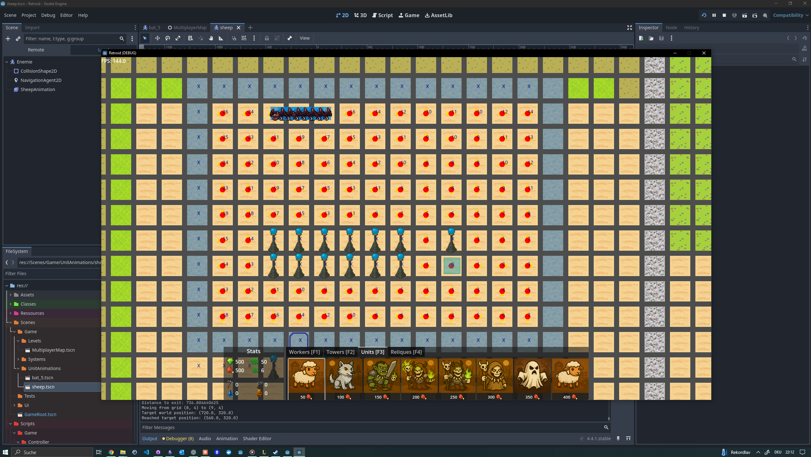

Motivation
I enjoy turning ideas into functional, elegant solutions. I focus on writing clean, maintainable code, collaborating effectively, and constantly learning either to solve real problems or simply for the fun of exploration.
Lately, my main interest has shifted toward hybrid intelligence. The intersection where human creativity and AI capabilities amplify each other. I spend much of my free time experimenting with tools, building small prototypes, and testing how AI systems can work alongside humans rather than just automate tasks. I’m driven by how these systems can elevate productivity and unlock new ways of interacting with software.
I am particularly intrigued by MCP (Model Context Protocol), which I see as the next major evolution in how we integrate LLMs into everyday tools. It opens the door to richer, more dynamic forms of hybrid intelligence by allowing models to access structured context and interact with external systems more effectively.
Period: 2025 Q3
AI agents and prototypes
I am currently researching, experimenting and bulding smaller prototypes with hybrid intellegience in mind. I believe this area has currently the most potential to enhance productity and generate new expierences
- Note taking app specialised for AI
- AI Agents instead of algoritmit matching
- Github TODO agent
Period: 2025 Q1-Q2
MCP experiments
I think we’re seeing the third evolution of Large Language Models, where agents become powerful tools, seamlessly connecting to services and transforming workflows.
I believe the future of work isn’t just hiring a person — it’s hiring a person and their agents. These agents will boost individual capabilities, automate tasks, and amplify creativity.
Right now, I’m actively exploring and building agent-based systems to be more efficient. As more platforms adopt MCP servers, I’m upgrading existing codebases and experimenting with practical use cases — like extending FastAPI and MongoDB with agent-ready MCP support.
Period: 2025 Q1

Nicegui SticknotesMD - Prototype
When building frontends in Python, I’ve primarily used Tkinter and Kivy — both solid for lightweight interfaces, but limited when it comes to polished, modern UIs.
Recently, I started experimenting with NiceGUI, a promising new framework that brings modern frontend capabilities to Python. It’s built on top of Quasar components, with Tailwind CSS support out of the box, making it surprisingly flexible for creating sleek, interactive interfaces.
As a test project, I’m currently developing a simple stickynote app to explore NiceGUI’s drag-and-drop features and get hands-on experience with its frontend building blocks.
Period: 2024 Q3-Q4

Tower defense with flowfields
Inspired by the classic Warcraft 3 Line Tower Defense, I’ve been developing a fresh take on the genre. At its core the game adds a unique combo field combination and evolving skills/towers, kinda like in Last Epoche.
The most technically challenging part, building the flow field system that governs pathfinding and movement — is nearly complete. This opens the door to deeper gameplay mechanics and a scalable game architecture.
Period: 2024
Microservice ChatBot for Twitch + YT
I built my own chatbot system using a microservice architecture with RabbitMQ with Pika in python. The system is using Docker and designed to be modular and scalable.
At the core, a central service listens to both YouTube and Twitch chats, communicating through message queues. Certain messages are broadcasted across multiple clients, enabling synchronized responses and features.
I structured the system with a plugin layer, where I integrated my own scripts like a tournament manager, Smash Bros. utility, trivia games, a slot machine, and more — all acting as independent services. Each script can communicate to the OBS integration layer if the streamoutput (what the viewer sees needs to updated).
The OBS integration layer is a simple socket server, which revieves data from the message queue and update visuals directly on stream — enabling dynamic and interactive overlays driven by chat activity.
Period: 2023-2024
Super smash ultimate highlights
I developed a highlight system for Super Smash Bros. that added an automated, dynamic layer to livestreams.
The script live-detected player names, tracked scores, and monitored viewer interactions in real time. If no notable viewer interactions were triggered during the match, the system would automatically identify the final knockout and generate a replay clip — which was then played at the end of the match as a post-game highlight.
This project combined real-time data tracking, event-based logic, and video capture automation, creating a more immersive and polished viewing experience.
Period: 2023 Q4 -2024 Q1
Games in Unity
I began prototyping a series of mini-games to test mechanics and design ideas, because I knew we I would need the skills in an upcoming project at work.
I build a classic Snake game, just instead of collecting food, you gather DNA fragments, all while avoiding active traps placed on the map. I used ScriptableObjects to structure and store map data efficiently, making it easy to build and iterate levels.
Another mini-game was inspired by Pokémon, but with a unique twist: instead of skills simply getting stronger, they could be customized in different directions, giving players more strategic freedom and personalization.
Period: 2023
Blackjack interactive cheatsheet
I started experimenting with automating the counting process in live blackjack using OpenCV, combining it with my previous experience in computer vision — mostly for fun and learning. Although I eventually shifted focus to a new project
Period: 2021-2023

Game tools / scripts
I build small game-related tools, primarily using Python and Tkinter, to enhance my own game experience.
One example is a TFT (Teamfight Tactics) buddy app — designed to act as both a cheat sheet and a real-time assistant. It should have provided hints on optimal unit placement, board upgrades, and timing the best moments to roll. The App would consume external API and OpenCV to read the board, to make the best possible decisions, but I never implemented this part.
Another is a custom timer tool for Guild Wars 2, built to manage and track various in-game events and activities more effectively during sessions.
Another example is a Dead by Daylight perk package, which indicates the different tiers of perks.
Period: 2021
Website for my livestream
Building on my first website experience, I set out to create a more professional website for my livestream, aiming to modernize the look and feel using newer tools and design practices.
Although it was still built with PHP, it served as a solid side project where I experimented with cleaner UI, improved structure, and stream-related features. Viewers could check their rankings, view stream stats, and access other interactive content connected to the chat and stream.
It was a valuable step forward in learning how to tie backend systems to live user data and present it in a user-friendly way.
Period: 2020
Discord bot + rasberry pi
I run my own community Discord server, and back before Discord became as feature-rich as it is today, I built a custom bot to extend its capabilities.
The bot could assign specific roles, control access to private channels, and deliver targeted newsletters based on user preferences — helping automate community management and streamline communication.
I ran the bot on my Raspberry Pi, which also hosts my Home Assistant setup, showcasing my interest in lightweight, self-hosted solutions and automation across both digital and physical environments.
Period: 2018-2022

Scripts for AnkBot (Streaming)
Before building my own chatbot, I extensively customized AnkBot/Streamlabs Chatbot, creating a suite of interactive scripts that engaged viewers and enhanced stream interactivity.
Some of the features I developed included:
- Trivia games with real-time overlays
- A slot machine game with visual feedback
- Emoji and chat message overlays for dynamic interaction
- A Mario Maker 2 stage queue with a local stage database
- A Super Smash Bros. Arena queue system
- Text-to-speech implementations for chat triggers
- Custom profiles with overlay displays
- A personalized Mii-style welcome screen for new viewers
These scripts varied in size and complexity, often written in Python 2.x, with some using OpenCV for visual elements and SQLite for local data storage.
Working with these systems gave me valuable experience in real-time interaction, overlay design, and community engagement — and laid the foundation for building my own modular chatbot later on.
Period: 2013-2014
Community Website
I was very active in a gaming community with around 200 active members, and I saw an opportunity to create a community hub — a website where we could share ongoing activities, events, and contests.
Even though website builders were already available at the time, I chose to build everything from scratch to deepen my understanding of web development. The site was written in PHP, with only a few lines of JavaScript, and served as a central place for community interaction and updates.
It was a great hands-on learning experience and one of my first real-world web projects.
Period: 2010
Online browser game in low-code platform
Back in high school, I created a browser-based space game using a low-code platform that allowed for modular development and easy hosting. Players could upgrade and build buildings to improve ressource output and conquer new plants. I don’t remember all the details, but it was one of my first experiences building and launching a game — and it sparked my long-term passion for development and systems design.